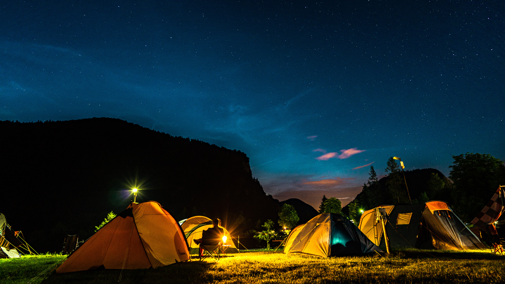

GALLERY
-

Discovering Hidden Gems: The Top Off-the-Beaten-Path Destinations in Quezon Province
Explore lesser-known outdoor destinations in Quezon Province with our guide
- 
Hiking for Beginners: Tips and Advice for Your First Hiking Trip in Quezon Province
Learn the basics of hiking and get ready for your first hiking trip in Quezon Province with our tips and advice
-

Camping with a Purpose: How to Leave No Trace
Discover the principles of Leave No Trace and how to minimize your impact on the environment while camping in Quezon Province.
-

Capturing Nature's Beauty: A Guide to Nature Photography
Learn the art of nature photography and capture stunning shots of Quezon Province's natural wonders.
-

Healthy Hiking: Tips for Staying Safe and Comfortable on the Trail
Stay safe and comfortable on your hiking adventure in Quezon Province with these helpful tips for a healthy hike.
-

Beach Fun: A Guide to the Best Beaches for Swimming and Surfing in Quezon Province
Find the perfect beach for swimming and surfing in Quezon Province with our guide